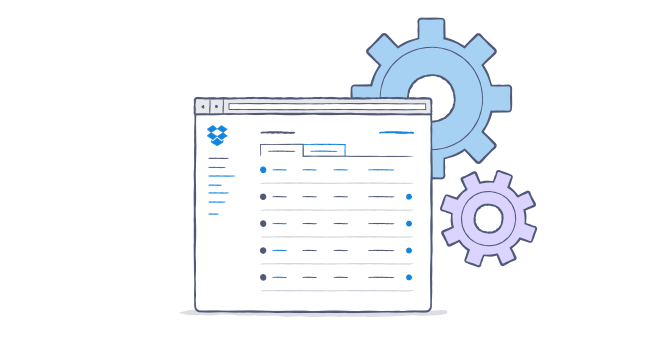

Change your account settings
Change your password, connect your personal and work accounts, or switch your preferred language.
It's easy to manage your account settings from the Dropbox website. The only thing to remember is that with a Dropbox for Business account, only your admin(s) can change the email address associated with your account.
Update your account settings

The Account page is the central location to manage your Dropbox account settings. You can:
- Update your personal email address.
- Administer the computers linked to your Dropbox account from the Security tab.
- View and administer the third-party apps linked to your Dropbox account via the My apps tab.
- Disconnect your personal and business Dropboxes on the Profile tab.
- Enable two-step verification on the Security tab.
- Change your language preference on the Profile tab.
Was this article helpful?
:) Yes
:( No
← Previous
Next →